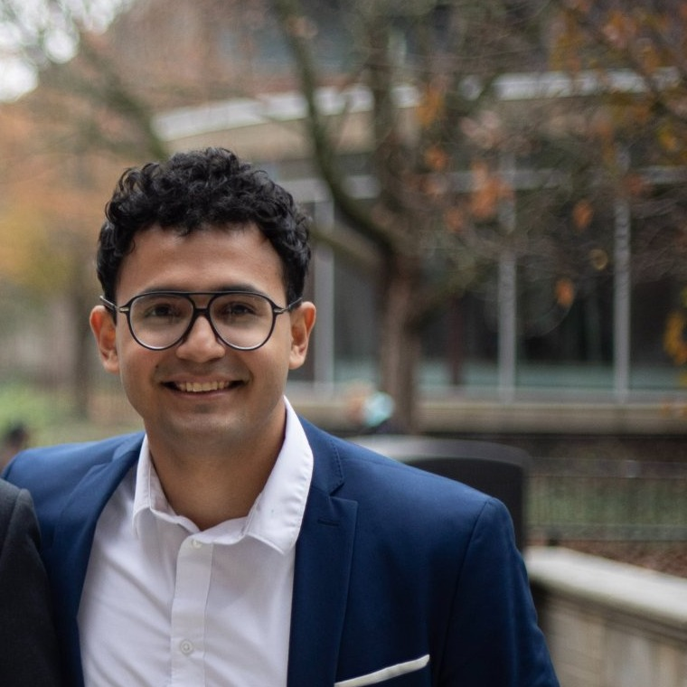

Embedded software engineer with a foundation in firmware, real-time control, and precision instrumentation. I write register-level C and AVR Assembly, architect full sensor-to-software acquisition pipelines on live research hardware, and implement industrial communication protocols from the ground up. Drawn to systems where a line of code carries physical consequence.

Systems where software carries direct physical consequences — built from the register up.